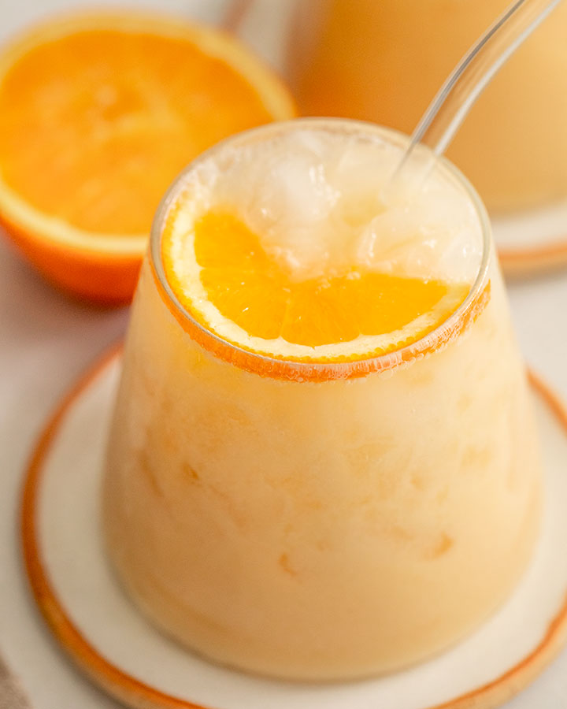

Morir Soñando
A refreshing drink made from orange juice, milk, sugar, and ice, creamy and citrusy.
Jugo de Chinola
Passion fruit juice, sweet and tangy, served cold with sugar and water or milk.

Jugo de Tamarindo
Tamarind juice made from pulped tamarind pods, water, and sugar, tart and refreshing.

Batida de Lechosa
Papaya milkshake blended with milk, papaya, vanilla, and sugar, smooth and tropical.

Jugo de Remolacha
Extremely refreshing, made with beets and enjoyed by both young and old.